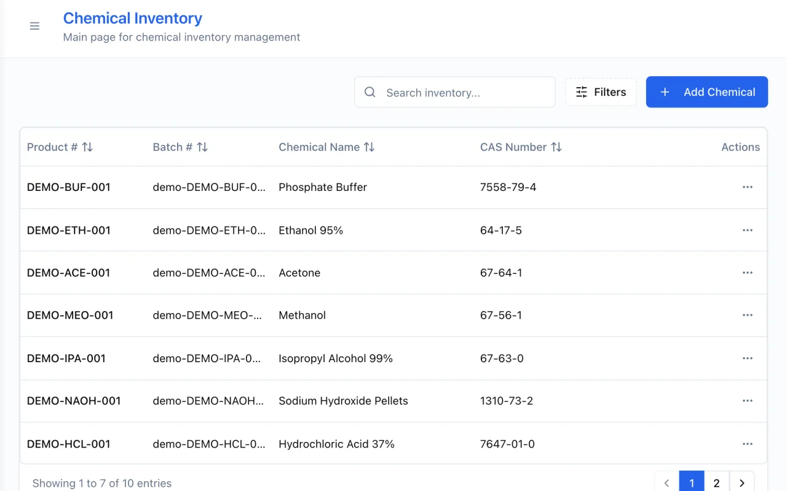

ProductLive
ChemInventory
Inventory software that fits how each lab works. One record of what a lab holds, where it is and who changed it.

- Tracks chemicals, locations, orders and batch documents.
- Keeps a change history with the user and the time.
- Gives each person a role: admin, manager or chemist.
Open ChemInventoryTry the demo
The demo uses sample data. Changes reset on refresh.